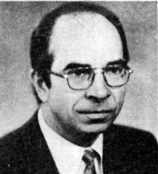

5 июля 2008 года, Разлив, на даче у М.В.Попова и в поезде Сестрорецк-Петербург. Записала Татьяна Косинова.
— Расскажите о том времени. В чем Вы принимали активное участие? Что вы сами инициировали, создали? Что возникло при Вашем непосредственном участии? Какие общественные движения, издания? Вот вся Ваша активность общественно-политическая в тот период особенно интересна.
— Тот период для меня был, по сути, завершением больших дебатов, связанных с защитой мною трёх докторских диссертаций. Первые две — по политической экономии — прошли с большим шумом и формально отрицательным результатом. Поскольку вопрос был о том, куда идти, и диссертации были посвящены тому, что движение на рынок приведет к негативным результатам, и что социализм рыночным хозяйством не является. Третья моя, философская диссертация, называлась «Планомерное разрешение противоречий движения коммунистического способа производства в его первой фазе» и была защищена быстро и успешно. И самое интересное — в ней было доказательство того, что наряду с прогрессивной тенденцией, которая толкает социализм вперед, есть другая — негативная, разрушительная тенденция, которая действует столь же объективно. И вопрос о том, какая из тенденций возьмет верх, — не такой простой.
Та концепция, которая к тому времени была руководящей идеологической концепцией для партии — концепция «развитого социализма» — была явно ненаучной. Это вредная и ошибочная концепция. Она определила дальнейшее разложение. Если вы считаете, что социализм «развитой», то больше ему развиваться некуда. А социализм — первая фаза коммунизма. Это незрелый, неполный коммунизм. И он не может быть зрелым, «развитым». И собственно, любить его особенно не за что. Вы любите незрелые яблоки? Поэтому от него либо вперед надо идти, к полному коммунизму, либо вернуться назад. Вполне возможно и то, и другое движение. Лет пять я пробивал статью о том, что есть у нас экономические причины для мелкобуржуазных действий, противоположных социализму, и что при социализме идет борьба рабочего класса с мелкобуржуазными попытками взять себе побольше и получше и дать обществу похуже и поменьше, — наконец напечатал. Вот это тогда наблюдалось, это чувствовалось. И так парадоксально получилось, что когда было доказано, в том числе в диссертации, что у социализма есть негативные тенденции, и он может рухнуть, — он рухнул.
В своих докторских диссертациях по политэкономии я отнюдь не поддерживал концепцию «развитого социализма». И в итоге получал прибытие на свою защиту команды противников и в том числе господина Ракитского, доктора экономических наук, который выступал моим неофициальным оппонентом и заявлял: «В работе Попова нет таких выдающихся теоретических достижений нашей партии, как «общенародное государство» и «развитой социализм». Это был для меня вопрос теоретический и принципиальный, а не вопрос зарплаты или карьеры. Вот почему мне пришлось защищать докторскую трижды. Два раза я защищался на ученую степень доктора экономических наук по политэкономии. И третий раз — в тот период, который захватывает ваши интересы, и мои, конечно, поскольку это бурный период, — в 1987 году. Мои защиты проходили очень бурно и носили общественный характер. Первая защита была с трех часов дня до часу ночи в 1978 году. Вторая была в 1982 году и продолжалась два дня. У меня было 100 отзывов на автореферат, из них больше половины положительных, в том числе отзывы положительные прислали все заместители директора Института экономики АН СССР. И как сказал мой старший коллега Василий Яковлевич Ельмеев, доктор экономических и доктор философских наук: «Мы сейчас эти вопросы обсуждаем в зале, а в Польше они уже обсуждаются на улице». Поэтому вопрос был у нас, с одной стороны, научный, потому что наука — это руководящая нить для действий. С другой стороны, он и политический. Оба раза я получал большинство, при том, что 2/3, необходимых для защиты докторской, не получал. Или другими словами, нужно всего 1/3 против, чтобы человек докторскую не защитил. И после моих двух незащит ВАК закрыла наш докторский совет по политэкономии, что чрезвычайно обострило борьбу.
У нас на экономическом факультете очень много вываривалось из того, что выплеснулось потом, чуть попозже. Например, декан нашего факультета О.И.Ожерельев потом стал помощником Горбачева. Я позднее тоже был на достаточно серьезных политических постах, но прежде я довел до конца дело своей докторской. То есть я сделал очень крутой поворот, не в смысле идей, а в смысле методологии, усилил свои позиции философские и защитил на доктора философских наук в 1987 году. Там все прошло очень быстро. Философы, несмотря на то, что, как вы понимаете, философы не такие добрые люди, очень серьезные, они высоко оценили диссертацию, дружно проголосовали «за». Я прошел еще несколько ступеней (вызов в ВАК, перезащита в Институте философии) и в 1989 году, через два года после защиты докторской, меня, наконец, утвердили. После этого я, оставаясь в ЛГУ, стал заведовать на полставки кафедрой научного коммунизма Института марксизма-ленинизма Ленинградского горкома партии. Мы создали факультет рабочего актива. Там стали обучать и бывших воинов-афганцев. Много сделали интересного и полезного. Начали, развернули работу с рабочими. Достаточно широкую. И у меня были позиции для того, чтобы ее разворачивать.
В это же время я участвовал активно как публицист в общественной жизни (премия журнала «Молодая гвардия» за 1981 год за критические статьи и рецензии). В частности, мне пришлось принять участие в обсуждении нашумевших пьес Михаила Шатрова о Ленине. Я к тому времени для журнала «Молодая гвардия» рецензировал всякие публикации, содержащие ленинские мысли, статьи, заметки, а также большие сборники (»Ленин о коммунизме», «Ленин о диктатуре пролетариата», «Ленин о борьбе с контрреволюцией» и др.). И я обратил внимание на то, что у Шатрова идет сплошная подтасовка. Вроде бы Ленин, люди пришли, оделись красиво, но говорит персонаж что-то совсем не то. А дальше было дело техники. Я к тому времени закончил читать полное собрание сочинений Ленина, мне было легко: то, чего точно не помнил, было в конспектах, можно было просмотреть и найти соответствующие места. И я обнаружил у Шатрова колоссальнейшие извращения.
И вот мы выступили с критикой этих извращений по ленинградскому телевидению. Мы — это Смирнов Игорь Константинович, мой заведующий кафедрой, доктор экономических наук профессор, Муравьев, доцент, историк и кандидат философских наук Владимир Иванович Еременко, который сейчас советник председателя Законодательного собрания Санкт-Петербурга. Мы обнародовали то, что это никакие не ленинские пьесы, а антиленинские пьесы, там троцкизм под видом ленинизма. Шатров разъярился: я приеду, я их раздолбаю, разнесу. И приехал он с бригадой. Белла Куркова организовала прямой эфир и меня и Смирнова приглашает: «Вы как? Будете в прямом эфире участвовать?» 4 часа в «Пятом колесе». Я говорю: «Будем». А там будет Шатров, Логинов, Старцев и Соболев Геннадий Леонтьевич — три доктора исторических наук и «драматург» Шатров. А вас будет двое. Я говорю: «Да хоть сто. Только давайте часы песочные поставим: сколько мы будем говорить, столько и они. Вы Беллу Куркову не знаете? Она ядовитая была — ууу. Страшно разозлилась: «Как так?» И говорит Смирнову, а он такой интеллигентный: «Игорь Константинович, могу я, как руководитель передачи, определить?» Он говорит: «Конечно, можете. — А могу я не ставить часов? — Конечно, можете. — А вы будете участвовать? — Я? Да я с Вили Старцевым, с этим подлецом, ни за что не сяду за один стол». Потом мы подумали: сейчас нас обольют грязью по телевидению и потом очищайся. И я пошел один. Думаю: ну, поговорят они минут 40, у них кончится пар, а дальше будет у меня с ними дискуссия. И прошла дискуссия, которую они проиграли. После этого меня на телевидение что-то не приглашают. Хотя ведь Белла Куркова была моя абсолютная противница, но она организовала дискуссию. И рот не закрывали. А сейчас на телевидение не попадешь. Телевидение стало увеличительным стеклом для всяких слабых людей, а сильных людей стараются не приглашать.
Обнаружил, что с помощью псевдоленинских пьес Шатрова идет идеологическая обработка партийного аппарата. Люди в партийном аппарате не особенно знали ленинизм, марксизм. Хуже того. Мне приходилось от Университета марксизма-ленинизма горкома партии проверять, как люди знают ленинские работы. Я обнаружил, что люди занимались 20 лет в системе партийной учебы и за это время ни одной статьи не прочитали. Ни-ка-кой. Они читали всякую жвачку, которая подавалась в учебниках по развитому социализму.
Но люди, которые хотели разбираться, разбирались, они начали задумываться о том, что происходит. И когда говорят: все бросились за Горбачевым, все повернулись… — это не так. Потому что к этому времени созрело понимание того, что люди, которые сидят наверху, занимаются вовсе не улучшением социализма, они собираются поворачивать назад. И поворачивают назад. И это вопрос не о том, хорошо это или плохо, а это просто факт жизни. И вопрос не в том, верной ли дорогой мы идем, а вопрос в том, в какую сторону.
С 1935 года мы не жили при Советах, определяемых как органы, формируемые избранием от трудовых коллективов, у нас с 1936 года были выборы по территориям, улицам и площадям, при которых нельзя отозвать депутата, заменить его. Поэтому шло загнивание госаппарата. И за 50 лет загнивания, к рубежному, 1985 году наверху просто сидела огромная масса людей, которые давно утратили способность выражать интересы народа. Они блага уже получили, но они их получили в пользование. Теперь им хотелось получить эти блага в собственность.
Когда Ельмеев и Долгов попросили меня собрать, что у Ленина написано про выборы в Советы, я нашел в своих конспектах (70 тетрадей), что в Программе, принятой на VIII съезде партии в 1919 году было записано, что основной избирательной единицей и основной ячейкой государства является не территориальный округ, а завод, фабрика. Лишь этот принцип дает не только право, но и возможность отзыва.
И я наблюдал, как это может происходить. Мне пришлось быть в эти бурные времена, и с этого началось мое еще более активное участие в общественных делах, не теоретическое, не в качестве активного публициста, а в качестве политического деятеля, когда начались выборы в Народные депутаты СССР в 1989 году. Выборы в Народные депутаты СССР у нас в Ленинграде проходили по национально-территориальному округу. То есть весь город был — округ, и было 30 с лишним кандидатов. В частности, я был кандидатом от завода Козицкого, от коллектива Ленинградского морского порта, от НПО «Буревестник» и от канатной фабрики «Нева». Я и по другим коллективам проходил. В частности, по «Кировскому заводу», и огромный коллектив КБ № 3, где было 6000 человек, проголосовал, чтобы я был кандидатом и от Кировского завода. Но на общей конференции от Кировского завода прошел не я, а Сергей Андреев. Но зато я увидел, что за 3 дня огромный 6000-ный коллектив спокойно собирает конференцию и, кого желает, выдвигает. Позднее я узнал, что от Кировского завода в 1920-е годы избиралось в горсовет 4 человека — причём депутатов, а не просто кандидатов.
И этот механизм был полностью разрушен в 1930-е годы. Ведь одно дело кандидаты, другое — депутаты. Кандидаты от коллективов оставались почти до самого конца. До Горбачева, когда уже появились кандидаты от друзей кино, от партий, от филателистов, и на Съезд Народных депутатов СССР пришли через много-много разных открытых дверей и щелочек всякие люди, и проходимцы в том числе. С 1936 года действовала система такая: вас выдвигает коллектив, потом вас ведут туда, где вас никто не знает, и там избирают. И уже никто отозвать не может. И человек чувствует свою безнаказанность и оторванность, и бесконтрольность, и разлагается. И вот эти разложенцы составили государственный аппарат, сформировавшийся к 1985 году.
— Все это вы раскопали когда?
— В то время. И раскапывали все глубже и глубже. Встреча у нас была с первым секретарем ОК КПСС Соловьевым. В Петроградском РК КПСС мы устроили такое действо вместе с Василием Яковлевичем Ельмеевым, с В.Г.Долговым, А.С.Казенновым (сейчас профессор ЛГУ им. А.С.Пушкина). Казеннов активно участвовал в этих делах, вплоть до того, что он охранял то знамя, которое висело над домом Политпросвещения полтора месяца, после того, как в Смольном сели господа демократы. Напротив Смольного развевалось красное знамя военно-морское. Красиво. И даже Казеннова арестовывали за это дело.
Раскапывать мы начали постепенно. Заметил это первым профессор Сергеев Алексей Алексеевич, он наше внимание обратил. Затем мы с Долговым и Ельмеевым выступили в «Ленинградской правде», потом «Советская Россия» вела эту кампанию — «Депутат от производственного округа». Подключился завод «Магнетон», есть такой Фирсенков А.И., нынешний генеральный директор, и в пропаганде выборов через коллективы участвовал председатель профкома этого завода.
Дальше этот вопрос — возвращение к ленинскому принципу выборов от производственного коллектива — стал центральным для тех, кто хочет поправить дело и вернуть его на рельсы социализма. Только не горбачевского социализма, а того социализма, который бы соответствовал его сущности. Советская власть являлась не одной из возможных форм, а единственной адекватной формой диктатуры пролетариата, социализма. И если этого в какой-то стране нет, там все рушится очень просто. Ушли наши войска — и рухнул социализм. Если у нас рухнул, — то он рухнул во всей Европе.
Я был в Северной Корее и хотел посмотреть, как там дела: там тоже нет прочных гарантий сохранения социализма, так как в истинно социалистических государственных формах дело диктатуры пролетариата там тоже не закреплено. И кстати, у нас в ленинской конституции это тоже не было закреплено, хотя Ленин — юрист. Это было в Программе партии, с 1936 года не соблюдалось, а в 1961 г. вместе с программой ушло. При Сталине Программа партии оставалась, ее никто не ревизовал вплоть до 1961 года, но фактически это ушло уже в 1936 году. При том, что я в целом позитивно отношусь к Сталину, думаю, что это одно из обстоятельств, которое тоже должно быть учтено, и к нему можно предъявить претензии теоретические. Вы можете взять «Основы ленинизма», там положение Программы партии о выборах по производственным округам цитируется, но на практике пошли в другую сторону. Отношение к Сталину потом тоже было с этим связано, он за это и поплатился.
Мы, люди достаточно теоретически активные, в Ленинграде организовали Общество научного коммунизма. Это было в 1987–1988 годах или, может быть, немного позже, с 1989 года, когда я защитил докторскую и стал заведовать кафедрой научного коммунизма Университета марксизма-ленинизма горкома КПСС. Ельмеев Василий Яковлевич написал программу общества. Никто это общество не регистрировал. Просто мы записали людей, сделали программу и стали проводить в Доме политпросвещения Ленинградского обкома КПСС заседания клуба «За и против», собирать народ. Начали мы с интеллигентов, а потом подключили сюда рабочих. А вот следующим шагом было создание Городского совета политклубов рабочих. Он не был на базе Дома Политпросвещения. Участвовали в нем Первый секретарь Петроградского РК КПСС Юрий Евгеньевич Раков, Первый секретарь Смольнинского райкома Валерий Федорович Полосин, и председатель Исполкома Смольнинского района Чаус. То есть надо сказать, что у нас некоторые работники номенклатуры, которые не сгнили, участвовали в организации рабочего движения. Но, к сожалению, в малом количестве.
Меня звали в партийный аппарат. Ну, вот квартиру дадим… Я говорю: «Квартира у меня есть». И на машине катали черной. Я говорю: «Вы же меня знаете? — Знаете. Я же выступлю против вашего «развитого» социализма, вас же потом и прогонят. Мне вас жалко». Причем, никто не сомневался, что я выступлю.
Когда мы образовали Клуб «За и против» в Доме политического просвещения (ДПП), у нас было немалое влияние на умы, и мы могли использовать возможности телевидения. Хотя заведующая ДПП очень настороженно относилась ко всем нашим инициативам, но возможность предоставляла. Я был к тому времени консультантом Ленинградского телевидения. Телевидение к тому времени тоже достаточно позитивную линию вело. Мы даже активно взаимодействовали с Беллой Курковой. Она тоже была кандидатом в народные депутаты СССР, как и я. И тогда прошел только Иванов, который был вместе с Гдляном, и смылся потом, ничего не сделав. Он всякие байки рассказывал здесь, народ развесил уши. За него проголосовало 90 процентов. Мы, все остальные 30 с небольшим человек, пролетели. А Иванов стал Народным депутатом СССР и, по-моему, депутатом Ленсовета. Потом оказалось, что они много нарушений закона сами сделали. Кого-то они разоблачали, но надо было еще их разоблачать.
Первой организационной точкой можно считать создание Общества научного коммунизма. У нас значки были такие с «Авророй», причем мы не сами их изобретали, а продавались такие. И Клуб «За и Против» регулярно собирался, полный зал был — полторы тысячи человек. И показывали по телевидению эти дискуссии политические по вопросам политическим, экономическим и прочим, которые там велись.
Кстати, в работе Городского совета политклубов рабочих участвовала Нина Александровна Андреева. И муж ее, Владимир Иванович Клушин, доктор философских наук, очень умный, очень толковый. Мы устроили телевизионную передачу по обсуждению статьи Н.А.Андреевой, я ее проводил, в Выборгском райкоме партии. И она прошла по Ленинградскому телевидению при поддержке Александра Якимовича Дегтярева, который был секретарем обкома. Ее англичане закупили. Там мы обсуждали ее статью, и статью мы в целом одобрили.
Пришло понимание того, что в столь острой ситуации без рабочих, интеллигентскими силами ничего не выправишь. Мы поняли, что нам противостоит вся эта верхушка, которая объявляет, что она за развитой социализм, чтобы было якобы «больше социализма», хотя это какая-то глупость, потому что это не мука, и не крупа, его «больше» не может быть. Он может быть более развитый, менее развитый. Больше социализма может быть в переходный период, когда борются уклады. Вот у вас социалистический уклад, вы расширили, будет больше социализма, а мелкобуржуазный или частно-хозяйственный капитализм сократился. А «больше социализма», с чем выходил Горбачев, Лигачев, при том, что они вроде бы стояли на разных полюсах, не может быть.
Надо сказать, что мы это уже достаточно ясно понимали и начали собирать силы. А силы мы собирали так: мы начали создавать Городской совет политклубов рабочих. Очень большую поддержку нам оказал в этом Юрий Евгеньевич Раков, который умер в этом году. Он умер в 2008 году, будучи первым заместителем председателя Комитета экономической политики, промышленности и торговли Правительства Санкт-Петербурга. А тогда он очень активно действовал, говорил: «У меня Аврора в районе». Это Петроградский район. Он превратил свой райком в штаб противодействия антисоциалистическим тенденциям. Там у нас была комната и там мы начали готовить создание общественной организации. Причем мы уже знали, что происходит в Прибалтике. Там были созданы народные фронты, которые оказались, конечно, не народными, а антинародными. Но не сплошняком, потому что всегда какое-то общественное явление отражает разные тенденции, а не только одну. Нельзя сказать, что все люди, которые туда пошли, плохие люди. Но роль их была в том, чтобы разрушить социализм, что они и сделали.
А мы начали готовить общественное объединение, по отношению к которому создание Народного фронта в Санкт-Петербурге стало бы альтернативным. Собрались выйти из положения глухой обороны. И мы соответствующую работу провели. Участвовал в ней и Юрий Евгеньевич Раков, участвовал Никифоров, секретарь Облсовпрофа. И они, со своими должностями не расставаясь, не побоялись войти в Координационный совет созданного Объединенного фронта трудящихся Ленинграда и области.
А создавали мы его так. В Городском совете политклубов рабочих, который очень активно развивался, нашлись очень активные рабочие. Это Пыжов Анатолий Васильевич (не сказать, что сильно здравствует, болеет, но действует) и очень талантливый молодой парень с завода «Русский дизель» депутат Ленсовета Игорь Владиславович Красавин, который блестяще выступал, красивый, молодой, спортивный. Красавин тоже был кандидатом в народные депутаты СССР, и Пыжов был кандидатом в народные депутаты СССР. Но, в отличие от меня, доктора наук, титулованного человека, который готовился к выступлениям по радио, телевидению, Анатолий Васильевич Пыжов, рабочий с Адмиралтейского завода, так сказал: «Товарищи рабочие…», что за него проголосовали больше, чем за меня. А Игорь Красавин выступал против развлекательного центра в Лисьем носу: «У нас хотят отнять наше богатство, где гнездовья 150 видов птиц, и загадить ради денег». И он призвал на обратной стороне бюллетеня высказать свое отношение к затее с уничтожением заповедника. И после этого очень активно народ откликнулся, вся эта затея сорвалась активными действиями одного человека.
Мы большинства не получили, получил Иванов, но мы как люди, поставившие задачу сплачивать силы, решили не просто ограничиться выборами, мы уже не ставили выборы как задачу, а мы использовали эти выборы. Мы объявили по радио, что просим всех сторонников собраться, тех, кто за меня проголосовал. Вот за меня проголосовало много людей, а я их не знаю. Объявили, чтобы пришли, пригласили их. Конечно, пришла, может быть, десятая часть, но это люди, которые проголосовали за программу, которые тебя поддержали, и эти люди участвовали в формировании тех общественных организаций, из которых появился и В.А.Тюлькин, и другие.
О последовательности я вам расскажу. Дальше началась цепочка таких политических действий, которые привели к созданию Объединенного фронта трудящихся, Инициативного движения коммунистов России, затем Компартии РСФСР и т.д.
Так вот, мы таким образом связались со своими избирателями, и поскольку в воздухе была гроза, демократы собирались уже сделать Народный фронт, и госпожа Салье тогда, которая была нашим политическим оппонентом, собрала огромный митинг в Приморском Парке Победы, на ступеньках у стадиона Кирова. Но мы как кандидаты в депутаты, Красавин, Пыжов и я, на этом митинге выступили и сказали, что мы создали Объединенный фронт трудящихся. Это название мы придумали утром с Пыжовым, утром, до митинга. Объединенный фронт трудящихся пока Ленинграда и области. А потом уже в Москве появился Московский объединённый фронт трудящихся и позднее, в Свердловске был учрежден Объединенный фронт трудящихся России. Предварительно мы договорились с Ю.Е.Раковым, что нам будет дано место в ДК Ленсовета, у него в районе. Нам выделили комнату 417-ю с телефоном, зал для заседаний, для обсуждений, размножили нашу листовку. И вот на этом большом хурале, который собрали наши политические оппоненты, мы провозгласили публично об образовании Объединённого фронта трудящихся, и попросили желающих участвовать в этом деле. Раздали листовки, сказали? куда идти, какой телефон — и народ пошел валом.
Итак была партия бездействующая, которая находится в положении «ни тпру, ни ну», совершенно парализована, и народ пошел в Объединенный фронт трудящихся. Мы их записывали, распределяли по поручениям, придумали конференцию, чтобы всех людей расписать, кто чем занимается, в каком районе, какие подразделения. И за короткий срок — с того времени я такой активности, которую проявило бы население, причем в большой массе своей интеллигенты — я не видел. Сейчас приходится иметь дело с рабочим движением, интеллигенты сидят, побаиваются, чтобы у них не отняли последнюю зарплату. А тогда среди интеллигенции были разные настроения, прямо противоположные. Большая масса квалифицированных, умных, толковых людей просто рванула в этот Объединенный фронт трудящихся. Мы провели конференцию, оформили, зарегистрировали. Рядом с Выборгским райкомом партии находится банк, это было исполкому принадлежащее здание. Зампредседателя исполкома разговаривал со мной на конференции так: «Завтра приходят капиталисты. Что вам надо? — Нам надо юридический адрес. — Нет вопросов. Приходите завтра». И докер Федотов, мое доверенное лицо, когда я был кандидатом в депутаты, пошел, ему выдали справку о предоставлении Фронту трудящихся юридического адреса. И мы зарегистрировались — Объединенный фронт трудящихся Ленинграда и области.
Только мы зарегистрировались, через неделю зарегистрировался Народный фронт. И это все поставило в совершенно другие условия в Ленинграде по сравнению с тем, что происходило в Прибалтике. Все журналисты, и на радио, и на телевидении, и в газетах не хотели, чтобы по какому-то вопросу выступал только кто-нибудь один. Если инициативу проявлял Народный фронт, приглашали Фронт трудящихся. Если мы выступали с какими-то идеями, приходили на телевидение, требовали нам дать слово — приглашали Народный фронт. Надо сказать, что иногда зря ругают журналистов, я никогда этим не занимался и могу сейчас подтвердить, что никто нам так просто рот не зажимает. Если вы хорошо подготовились, хорошо выступите, вы получите освещение, в том числе на телевидении. В нашей газете «Народная правда» сказано, что мы сделали конференцию в Шалаше. И здесь написано, какие телевизионные программы осветили ее, и осветили очень объективно. Понятно, что у каждого есть какой-то вкус и какие-то устремления, но в целом очень это было объективно и здорово.
И мы не можем сказать, что тогда нам не давали слова, что все дело было в том, что средства массовой информации встали на сторону контрреволюции — это лапша, которую сейчас на уши вешают, причём эту лапшу вешают те, кто считают себя коммунистами. Они как бы себя спасают — вот, нам было тяжело. Нам было тяжело, но не так уж тяжело, в том смысле, что тот же председатель горисполкома Ходырев направил нас на съезд Верховного Совета России. Мы там выступали.
— А как он это сделал?
— Он дал нам просто направление, и мы туда поехали в командировку. Мы пришли к нему в кабинет и попросили: «Владимир Яковлевич, безобразие, мы хотим поехать и рассказать о выборах через трудовые коллективы, об этой идее. — Нет вопросов. Поезжайте» — и дал нам командировку.
В печати мы стали очень широко пропагандировать, что надо изменить систему выборов. Горбачев сделал эксперимент в Москве в четырех районах. Как это бывает, если эксперимент положительный, то надо так не делать. Эксперимент показал себя очень хорошо, но всё это захлопнулось, ничего не стали делать. А здесь у нас были обсуждения по телевидению. В том числе сидели напротив я и Болдырев, наши товарищи из Фронта трудящихся и из Народного фронта. И когда Болдырев стал возражать, я ему включил магнитофон, где Горбачев говорит, что «вот хорошая есть идея о том, что надо избирать через коллективы». Горбачев одно время повторял все, что ему скажут, — то ли не сразу сориентировался, то ли маскировался. И мы очень активно на телевидении пропагандировали.
Более того, мы обращались, стучались. Куда? В партийные инстанции. Партийные инстанции отнеслись в целом негативно. Почему? Потому что они были в таком состоянии, эти партийные чиновники, что ни один чиновник через завод, может быть, кроме Ракова, не прошел бы. Поэтому им эта идея была не нужна. Исполкомы — тем более, для них это смерть была. То есть мы о воспроизводстве кадров, о борьбе с паразитами. А они пойдут на завод, там они расскажут, что они делали, и точно их завалят. А тут они выбираются хоть бы хны, как сейчас. Сейчас вообще просто стало: заплатил за место в списке, и ты будешь депутатом, только надо иметь сумму денег. Теперь уже нет одномандатных округов. И это, в общем, правильно, потому что в политике один человек ничего не значит. Правильно-то правильно, но факт остается фактом, что деньги сейчас решают вопрос политический.
Мы обратились и в профсоюзы. Профсоюзы среагировали. Притом, что сейчас ФНПР гнилая организация, тогда это была организация, видимо, ближе всего стоящая к трудовым коллективам. И хотя на них сейчас тоже нападают, говорят: это старые советские профсоюзы… Когда они были советские, они были не такие. Тогда они ещё не хапнули всю эту собственность, и вынуждены были работать для трудящихся. Ленинградский Облсовпроф предоставил нам Дворец труда для круглого стола о выборах через трудовые коллективы и для связи с другими городами.
С нами встретился один из руководителей Российских профсоюзов, бывший какой-то комсомольский деятель (фамилию не помню), а потом нас пригласили выступить на пленуме. И докер К.В.Федотов выступал на 6-м Пленуме ВЦСПС.
— Докер Федотов у вас как матрос Железняк.
— А он даже был комендантом Смольного во время событий. Константин Васильевич Федотов. Он сейчас первый заместитель председателя профкома Первого контейнерного терминала в порту. Мы с ним вместе книжку написали. Он из профсоюзных работников самый теоретически подготовленный, самый грамотный. Мы с ним подготовили проект Трудового кодекса, который противостоял правительственному, и даже был внесен раньше правительственного. Использовали этот опыт в 1996 году. Правительство попало в очень тяжелое положение, и пропал его (правительства) проект. Пришлось им делать компромиссный. А то они думали: внесут, а мы — как гарнир, но не получилось.
На 6-м Пленуме ВЦСПС выступил Федотов, и я там выступал в меньших объемах, с репликами. И Пленум ВЦСПС принял решение выступить за производственный принцип выборов. Из всех возможных политических и неполитических организаций крупных — профсоюзы, партия и советы — профсоюзы поддержали эту идею. Более того, они сказали: «Ребята, что вам нужно? — Нам нужно место, чтобы провести съезд Объединенного фронта трудящихся России и учредить его. — Вот председатель Свердловского облсовпрофа, с ним договаривайтесь». Мы пошли с Федотовым, с ним договорились, куда приехать. Будет дано общежитие, будет дано место, где проводить, но дальше все сами делайте, содержания мы не касаемся. Позитивное было отношение, предоставление возможностей.
В Свердловске в то же время собиралась Межрегиональная депутатская группа на свой съезд на одной стороне площади. А на другой стороне площади — Объединенный фронт трудящихся России. Собрался учредительный съезд, который избрал сопредседателей — Якушева, Половодова, председателя контрольной комиссии Байдужу из Новосибирска, рабочих, и такую могучую создал организацию — Объединенный фронт трудящихся России, что она в свое время выдвинула кандидата в президенты. Мы ее зарегистрировали, тогда было можно зарегистрировать организацию. И кандидатом в президенты был тогда у нас генерал Макашов. Я ставлю его намного выше генерала Рохлина, потому что Макашов, будучи действующим генерал-полковником, выступил по существу с критикой политики, которая вела страну к гибели. И не сам снялся, а его сняли. А Рохлин вошел в избирательный блок «Наш дом — Россия», был там в числе лидеров, а когда его выгнали с крупной генеральской должности, тогда он стал левым. Это мало что значит. Вот сейчас разбираются, а кто его застрелил… Да это не вопрос. Застрелили его те, кто считали, что он отбился от стаи. В таких случаях скорее его застрелят, чем такого, как я. Я никогда к этой стае не прибивался, поэтому меня нечего стрелять. А на примере вот таких, как Рохлин, учат, что если уж попали в обойму, то уж не уходи из нее.
Я у кандидата в президенты РФ Макашова был доверенным лицом, а профессор Сергеев Алексей Алексеевич, который когда-то обратил внимание на принцип выборов через коллективы, был кандидатом в вице-президенты. И он большую работу агитационную провел, мы с ним вместе. В том числе с использованием тех материальных средств, которые выделялись государством на выборную кампанию.
Объединенный фронт трудящихся России появился таким образом: сначала Объединенный фронт трудящихся Ленинграда и Ленинградской области. Потом Московский Объединенный фронт трудящихся, там Р.И.Косолапов очень активно участвовал. Затем в Свердловске Учредительный съезд. А потом в Ленинграде был второй съезд Объединенного фронта трудящихся России. И второй съезд собрал партийную группу. Мы поставили задачу внутри партии собрать здоровое ядро, насколько это будет возможно. События показали, что это очень тяжело. Очень тяжело, потому что партия очень сильно сгнила.
Собрав партийную группу, мы учредили Инициативное движение коммунистов России. Это было в ДК Ленсовета. Инициативное движение коммунистов России при поддержке того же самого Ю.Е.Ракова, первого секретаря Петроградского райкома КПСС. Поэтому сказать, что все аппаратчики ушли в сторону, это неправильно. А я к тому времени был уже членом обкома. У нас тут новая мода пошла в Ленинграде — избирать членов Обкома не на конференциях, а по партийным округам. И я проходил в Выборгском районе в округе, где была «Северная Заря», «Красная Заря». Я у них часто выступал, читал лекции. Противостояла мне редактор газеты «Красная Заря», демократка. И я что-то недобрал. В таких случаях, когда что-то недобираешь по округу, надо было решать на конференции. На конференции Выборгского района все руководство Выборгского района провалилось. Меня же спросили: «А правда, что вы в ОФТ?» Причем с таким настроением, что вот я скажу «да», и меня прокатят. Я говорю: «Да, я действительно состою в Объединенном фронте трудящихся России, единственной организации, которая выступает за единство Советского Союза». Народ — раз, и проголосовал за, и я стал членом обкома партии.
— Это уже в 1991 году?
— Ближе к 1990 году. Я был в 1990-1991 годах членом обкома. Секретарём по идеологии был Ю.П.Белов. Но я то знал, что Белов именно той концепции придерживается, с которой умер социализм. Он на новой волне продолжил ту же самую линию. Когда мы выступали — я, Казеннов, который сейчас профессор ЛГУ, и к.ф.н. А.В.Снежков в Смольнинском райкоме партии за диктатуру рабочего класса — Белов нажаловался, что мы якобы против программы партии и требовал исключения нас и снятия с работы. Белов поступил как подлец. А, во-вторых, этот самый Белов и теоретически всегда был против главного в марксизме. И, в-третьих, пустой человек, который из всего усвоил только одно — «ленинскую методологию НЭПа», хотя это никакая не методология, а временная политика, рассчитанная на временное отступление в переходный период.
Я тогда устроил голосование на пленуме обкома, предложил исключить Горбачева из партии как возглавляющего антикоммунистическую фракцию, проводящего антинародную политику.
— Партийная дисциплина позволяла поставить такой вопрос?
— Я член обкома. Я не был членом аппарата, я был профессором в университете, но я был член обкома, я был на пленуме, я встал и сказал: я предлагаю поставить это на голосование. Меня поддержало 17 человек, в том числе Тюлькин, Терентьев, но не Белов. 17 из 200 примерно, я точно не знаю, сколько было членов обкома.
На бюро обкома я был только один раз. Зато, когда развернулись события, на второй день после захвата демократами Смольного, дверь в который открыл демократам Белов Юрий Павлович. Он был там один, пришла Старовойтова, он ей открыл дверь. Я поэтому ничего плохого про демократов сказать не могу. Когда начинают нападать сейчас: вот они такие, они сякие…
— А пришла именно Старовойтова?
— Да. И потом говорят: «Они такие, они сякие!..» Я говорю: «Что, они вас били? — Не били. Они стреляли? — Не стреляли. Вас никто пальцем не тронул, вы сами отовсюду ушли». И они ушли все в банки. Поскольку я ходил и деньги просил на газету, а я уже был членом обкома два года, я всех их знал: они все устроились — не рабочими и не директорами заводов промышленных, они все, в том числе и первые секретари, все устроились на какие-нибудь злачные места. В банки. Консультантами или просто руководителями банков. Поэтому это люди, о которых я раньше говорил, что они сбросили красные перья и устроились очень хорошо.
Так вот, была очень интересная такая ситуация, которая для истории имеет очень большую ценность. Я пришел, поскольку меня никто не приглашал, но события требовали, я решил пойти на первое же заседание бюро обкома после переворота, в августе, когда закрыли КПСС.
— Обком проводил заседания после августа 1991 года?
— Дело в том, что КПСС не закрыли, строго говоря, юридически. Вот я сейчас профессор по кафедре экономики и права, многих поймал на том, что они даже не думали, какие законы были. То есть была приостановлена деятельность партии в государственных организациях. А сейчас почти все частное — идите и открывайте в частных компаниях парторганизации, пожалуйста, и можно было открывать. Но там элементарная трусость еще присутствовала.
— Дисциплина партийная. Ходырев говорит.
— Трусость! Какая дисциплина? Тот же Гидаспов, будучи смелым человеком, когда на меня нападали некоторые после моего выступления в Выборгском районе, выступая на конференции, сказал: «У него своя позиция. Я с ней не согласен, но почему я должен какие-то меры принимать? Это его позиция. Он член обкома. Какие вопросы?». Вот позиция Гидаспова, тогдашнего первого секретаря Ленинградского ОК КПСС. Он крупный ученый, серьезный человек, первый секретарь. Он дров не ломал, вел себя очень порядочно. И того, что вот кто-то меня там будет прорабатывать, ничего подобного не было. Я совершенно спокойно действовал, что считал нужным, то и отстаивал.
Вот я пришел на бюро, на бюро были следующие люди: второй секретарь обкома Яшин его проводил, был Киселев (НПО «Равенство», главный инженер, второй член бюро обкома), Белов Юрий Павлович пришел с трясущимися руками: «Нам-нам ррразрешили только на два часа это место…» Я говорю: «Юрий Павлович, дорогой, это вообще на наши партийные деньги построено (Дом политпросвещения), вот Смольный только управляется обкомом, а это вообще наша собственность. Это на наши партийные взносы. Чего вы волнуетесь?» Я тогда встретил Сергея Беляева, который стал председателем КУГИ и сказал ему: «Вас сейчас в тюрьму посадят. У вас главное сейчас — частная собственность. Вы нарушили закон о собственности. Вы чего схватили-то? Идите, Смольный забирайте. А вы что пришли сюда?» Он как ошпаренный побежал.
Больше членов бюро не было, три члена бюро пришли — и все. И пусть у Юрия Павловича руки дрожали, но он был. Больше никто не пришел.
— Какого это числа было, не помните?
— Не помню. Буквально на следующий день. Почему я и приветствую ваше начинание, потому что я теперь уже не вполне доверяю своим воспоминаниям.
— 22-23 августа? Не писали хронику, дневников не вели?
— Да нет, в том-то и дело. Я писал очень много, но не дневников. Надо еще кого-нибудь перекрестно поспрашивать. В.А.Тюлькин был, Ю.Г.Терентьев был на этом заседании и я. Но мы не были членами бюро обкома, мы были три рядовых члена обкома. И были три члена бюро, второй секретарь Яшин. И товарищ Яшин сказал следующее: все партийные работники, освобожденные, платные, пусть не расстраиваются, они будут все трудоустроены и получат премию за ноябрь. Значит, это было не в августе, значит, это было где-то в конце ноября или в начале декабря, потому что там сначала была приостановка, потом запрет, позже. Вот люди о чем думали — премия за ноябрь. Поэтому я когда встречаю кого-нибудь из партаппарата, спрашиваю: «Ты за ноябрь 1991-го получил премию?» (смеется). Не о том думали, что будет с народом, куда он пойдет, хорошо или плохо ему будет… То есть основная масса разбежалась, остальная думала об этом — вот такая была картина.
Я продолжаю ту нить, которую мы вели с Движением коммунистической инициативы. Мы стали собирать съезд Движения коммунистической инициативы.
— Была какая-то еще Марксистская платформа?
— Это мелочь, то есть не в том смысле, что это не факт нашей политической жизни, но по масштабам, по организационным усилия и масштабам — это группа интеллигентов, которую А.А.Пригарин возглавлял, и так ее и окучивает, она в разных формах существует. Это люди, которые правильные вещи экономические пишут, но с чем-то в применении марксизма не согласны. Но серьезной величины не было. Они участвовали в съездах Движения коммунистической инициативы и даже приезжали на учредительный съезд Российской коммунистической рабочей партии, но в нее не вошли, потому что считали, что неправильно мы оцениваем роль Сталина. А оценка у нас была очень простая, мы в негатив его не записывали. Это не значит, что мы все оцениваем очень позитивно. Я могу дать очень обоснованную критикую экономических воззрений Сталина по товарному производству, закону стоимости, в некоторой части антимарксистских. Но это не значит, что когда мы оцениваем личность в целом, должны иметь какие-то перекосы или личные отношения, должны достаточно объективно оценивать.
Так вот, съезды Движения коммунистической инициативы мы стали проводить регулярно. И в несколько этапов. Редакционную комиссию возглавлял Виктор Георгиевич Долгов, выпускали брошюры с материалами первого Инициативного съезда, второго Инициативного съезда. И, наконец, мы в Москве провели съезд. И дело шло к тому, что мы собирали то ядро партии, которое не предало социализм, партию, коммунизм. Нравится это кому-то или нет, но сохраняли, по крайней мере, лицо и традиции. И потом мы поняли, что в КПСС в целом нам это не удастся сделать. Силы не равны. И тогда мы выступили с созданием в рамках КПСС Компартии РСФСР. И начали готовить создание Компартии РСФСР на полных парах, быстро и организованно, причем с опорой на рабочих. Главное, что нарушено было в КПСС — это то, что она перестала быть партией рабочего класса, а мы возрождали именно эту линию. Это главный критерий, начиная с «Коммунистического манифеста», в чем отличие научного коммунизма от, скажем, христианского поверья в то, что будет светлое будущее для всех, но не показана сила, которая к этому ведет. А не в том плане, что там только рабочие должны быть. Силы противодействующие гигантские были. Вот таким образом мы начали готовить.
Виктор Георгиевич Долгов и я — мы, половину лета 1990 года он, половину — я, просидели в ЦК. Готовили документы там в то время, когда создавалась Компартия РСФСР. В том числе Программу действий. А в создании КП РСФСР мы участвовали таким образом, что Горбачеву пришлось срочно начать создавать эту Компартию, иначе мы создали бы ее в прямой противоположности той верхушке, которая была. И вот он нашел фигуру этого Полозкова, который как бы всех устраивал, который всех гасил, с таким характером: «Ме…Ме...» Он сам никакой ревизии не делал, но он очень был недоволен нашей деятельностью.
— Это была креатура Горбачева?
— Фактически да, он его поставил. Но он в то же время не мог нам помешать, потому что нам уже помешать и Горбачев не мог. Тем более, что мы устроили такую вещь. На одном из Инициативных съездов мы делегацию рабочих направили в Москву, я с ней поехал в Москву, в ЦК КПСС, заняли там соответствующее помещение и сказали: «Не уйдем, пока эти рабочие не получат билеты на съезд компартии РСФСР, который стал готовить Горбачев». А для пущей убедительности мы издали газету «Молния», в которой было написано: «Изгнать из партии проводящую антинародную политику антикоммунистическую фракцию Горбачева». Это издавал уже Анпилов Виктор Иванович в Москве. А здесь, в Кронштадте (я этим занимался), мы издали наш проект программы, где отсутствовали все горбачевские глупости, а сделан «Проект программы КПСС», в тексте которого прямо стояло на первой странице: «изгнать из партии проводящую антинародную политику антикоммунистическую фракцию Горбачева». Это было издано блестяще в типографии «Советский моряк», в Кронштадте, где я читал лекции. И первый секретарь, не помню, кто это был, очень нам в этом смысле помогал. То есть сказать, что люди ничего не замечали и никак не действовали, никак нельзя. Это еще 1990 год.
— Программа КПСС, а еще какой-то подзаголовок по поводу авторства? Редакция программы чья?
— Движения коммунистической инициативы. Это было могучее движение.
Одновременно Алексей Алексеевич Сергеев, который был у меня оппонентом по докторской, и тот человек, который эту идею с Советами раскопал, тот, кто был кандидатом в вице-президенты России, потом стал членом ЦК КПСС, благодаря нам, потому что мы этого добились. Мы заняли помещение ЦК и не уходили, пока не добились того, что всем нам дали пригласительные билеты на Учредительный съезд КП РСФСР. Благодаря этому я не просто присутствовал на Учредительном съезде Компартии РСФСР в качестве делегата, но и выступил там с большой речью, где сказал, что «перестройка — это контрреволюция». А ведь тогда Горбачев везде рассказывал, что, якобы, «перестройка — это революция». Когда я выступал, сзади сидели Горбачев, Лигачев, Рыжков, Яковлев, в президиуме, и было это в Кремлевском дворце съездов. Телевидение вело прямую трансляцию. Ведь это был Учредительный съезд Компартии РСФСР. И там же мы предложили своих людей от Инициативного движения в состав Центрального комитета.
У нас было право совещательного голоса. Этим правом трудно было воспользоваться, потому что слова нам не давали. Но мы занимали все микрофоны и не уходили. Я два часа, например, стоял у микрофона. А товарищ Лукьянов делал вид, что он меня не замечает. Дождался перерыва, думает, пройдет перерыв, потом он не будет стоять. Кончается перерыв — я опять стою у микрофона. Короче говоря, я получил слово. И я предложил Долгова, Золотова и Сергеева в Центральный комитет. Долгов баллотировался даже на пост члена Политбюро. Там мы видели, как Зюганова предложил Горбачев на идеолога, что, в общем-то, заметно и сейчас. Любопытный был в этом смысле съезд. Мы там предлагали, в том числе, и рабочих на важные посты, поэтому там было очень интересно. И Тюлькина предложили в ЦК КП РСФСР от Движения коммунистической инициативы. В ЦК КП РСФСР от Движения коммунистической инициативы вошли Долгов, Тюлькин, Сергеев и Золотов из Нижнего Новгорода, он сейчас заведует Кафедрой экономической теории Нижегородского государственного университета, действительный член Петровской академии наук и искусств, как и я. Все эти люди по своему потенциалу научному достаточно высокому отличались не только активностью, но и головой соответствующей. Золотов выступал после меня, он был тогда совсем молодой, ему в этом году 50 лет, а мне 63, я на 13 лет его старше, вот он тогда был совсем молодым, он поворачивается и говорит Горбачеву: «Так вот, мы за вами не пойдем!» В Кремлевском дворце съездов! Это было очень эффектно. А у меня выступление было, где через каждую минуту, по крайней мере, были аплодисменты. 11 раз зал аплодировал.
То есть мы совершенно однозначно в смысле приоритета идеологического выигрывали. А в смысле организационного — нет. Вот то, что вы говорили о дисциплине. Хлопают, хлопают, а потом там командует первый секретарь и голосование идет: «фью» (Попов присвистывает, показывает рукой жест вниз)… Но все-таки Тюлькина, Долгова, Золотова и Сергеева мы провели в члены Центрального комитета Компартии РСФСР. А я, будучи членом Ленинградского обкома, потом во всех пленумах ЦК КП РСФСР участвовал. В том числе, когда решался вопрос с газетой. Вот «Народная правда», которая здесь лежит — это оттуда идет.
Долгов поставил вопрос на пленуме о том, что надо иметь газету компартии РСФСР. Полозков и Зюганов, который был членом Политбюро, секретарем по идеологии, тормозили изо всех сил. Тогда Долгов пошел с шапкой, собрал с 22 членов ЦК денежки и сказал на пленуме: «Сейчас, если мы не примем решение, я учреждаю газету. Но уже не ЦК, а вот этих 22 членов. Сейчас нет проблем, сейчас один человек может учредить». Встает генерал Лебедь, а он был членом ЦК Компартии РСФСР, и говорит: «Что это такое — партия без газеты? Партия не может быть без газеты». И голоснули. А Зюганов и Полозков говорят: «Что?! Мы пойдем на огороды, нам, наверное, выговор объявят». В итоге оказалась газета в Ленинграде, поскольку инициатива была из Ленинграда. Главным редактором (сначала редактором-организатором) был назначен Долгов. Продавили этот вопрос через пленум, но Зюганов, который должен был в первом номере дать статью, так и не дал. Дал Гидаспов, не испугался. И газета родилась как газета Компартии РСФСР и Ленинградского обкома КПСС, с изданием в Ленинграде.
Есть в Ленинграде человек, который поддержал программу Горбачева, когда обсуждалась она на комиссии. На этой комиссии присутствовали я и Золотов с программой Инициативного съезда, где было написано «изгнать из партии…». Комиссия проходила в зале секретариата ЦК, там было человек 60. Я получил тогда приглашение от Сергеева, которого выдвинули в ЦК КПСС от Инициативного движения, а Золотов — от Лучинского. Мы пришли к Лучинскому, говорим: «Партия стареет. А вот молодой человек, нельзя ли его продвинуть? — Я, — говорит Лучинский, — ничего не могу, я просто секретарь ЦК. — Но вы можете просто достать билет на обсуждение Программы КПСС? — Могу». Так мы вдвоём с Золотовым попали на заседание программной комиссии. Мы роздали свой проект и оба выступили. И только Владимир Валерьянович Калашников, который сейчас завкафедрой ЛЭТИ, поддержал Горбачева. Тот сразу его сделал секретарем ЦК КПСС на следующий день. И он был один месяц секретарем наряду с Гидасповым.
А в это время, когда мы сидели внутри, Анпилов сделал такую акцию: каждого, кто подходил к зданию, спрашивали: «Ты коммунист?» Если человек говорил «да», ему давали газету «Молния», в которой была наша программа напечатана и тоже было написано: «Изгнать из партии проводящую антинародную политику антикоммунистическую фракцию Горбачева». А если говорил «нет», тогда — «зачем идешь в партийный дом?»
И вот является в зал секретариата ЦК КПСС Горбачев, красный, как свекла. С ним какие-то два секретаря ЦК, газета «Молния» в руке. «Что это такое?! — газеты, пикеты, плакаты!.. Вот». Читает газету: «Изгнать из партии проводящую антинародную политику антикоммунистическую фракцию Горбачёва». Ну, дурак дураком, извините за выражение. Если ты политик, что же ты читаешь? А, главное, народ, уже начитался нашей программы. А ЦК КПСС раздавало на ксероксе какую-то ерунду свою. А мы — брошюру, то есть у нас гораздо более солидно: сделано в типографии «Советский моряк». Уже тут все были настроены соответствующим образом. Поэтому когда он прочитал, все восприняли нормально вроде, никто не возражал, не возмущался. Горбачев говорит: «Давайте неформально поговорим. Как будем называть теперь наш орган — политбюро или президиум?» Я говорю: «Конечно, если сидеть, надо президиум, а если политику вести, то Политбюро». Он так обозлился, так смотрит на меня. Я громко говорю, а народу там 60 человек. «Ладно, — говорит, — пусть будет Политбюро. А вот первое лицо — председатель партии или генеральный секретарь?» — Я: «Да, конечно, если сидеть — председатель». — «Ай, остается генеральный…»
Кстати, вот Зюганов сделался председателем. Что такое председатель партии? Ну, сидит впереди. Кстати, у дворян был предводитель дворянства. Впереди с копьем идет. А это что такое — сидят? Довольно было забавное время, когда мы там свои вещи проводили, отстаивали, и им приходилось с этим считаться. Поэтому они думали, как бы это дело свернуть. Может быть, у них был такой же замысел, как в Молдавии или как сейчас Монгольская народная революционная партия, она вся преобразовалась, переродилась, а так же, как раньше называется. А молдавские коммунисты — они, что, коммунисты? Ну какие они коммунисты. Они хорошая левая социалистическая партия с названием «коммунистическая» — партия коммунистов Молдовы. То же самое и КПРФ. Мы с ними сотрудничаем, участвуем, вместе делаем мероприятия, как с левым краем тех, кто участвует в выборах. Но считать, что они социализм построят, я в очень большом сомнении. Социализм не бывает без диктатуры пролетариата. У них нет главного. О чем, кстати, я сказал здесь, в Разливе, на конференции «В.И.Ленин в современно мире», — у вас очень хороший проект программы, только нет главного в марксизме-ленинизме, а так все хорошо.
Мы довели организационные дела до создания Компартии РСФСР. Дальше мы — Долгов и я — целое лето провели в ЦК Компартии РСФСР и сделали «Программу действий КП РСФСР», которая была вполне коммунистической. Дальше вы помните историю с Полозковым, который просто сдал Ельцину позиции в Верховном Совете, сдал, потому что бесхарактерный, слабый. А Виктор Аркадьевич Тюлькин, который был продвинут Движением коммунистической инициативы, попал на XXVIII съезд КПСС уже от Компартии РСФСР, будучи членом ее ЦК. Он выступил с известным заявлением меньшинства съезда о том, что на рынке социализм не построишь. Что и подтвердилось.
Подводя итог тому, что я сказал, очень большую активность развели товарищи, которые выступали в защиту социализма, не просто говорили, что мы за социализм, а проводили активные наступательные действия. Именно эти действия и убедили Горбачева и Ельцина в том, что нужно закрывать КПСС. А в КПСС Горбачёв и Ельцин влияние теряли. Мы собирали решения партийных организаций об исключении Горбачева из партии. Мы не только выступали, мы еще собирали в Ленинграде решения, которые двигали дело к тому, чтобы вообще его выгнать.
— И много набрали?
— Очень много. Несколько часов мы сжигали их после переворота на берегу Невы. Подписанные и оформленные решения партийных организаций, чтобы люди не пострадали. На всякий случай сожгли, потому что тогда партбилеты забирали, начали заводить дела (после путча), не исключено, что начали бы преследовать. Мы-то все равно были на виду, у нас этот вопрос не стоял. Поэтому некуда было бежать или уезжать. А это же решения, подписанные секретарями. Поэтому когда говорят, что вот, партия не выступила… Очень даже выступила. При захваченной верхушке найти форму, как выступать, на самом деле очень сложно. Но и эту форму мы нашли. Другое дело, что за столь короткий период преодолеть ту гниль, которая накапливалась в течение 50 лет, вряд ли было возможно.
Поэтому создалась теперь такая хорошая духовная атмосфера в том смысле, что тот, кто хочет заниматься марксизмом, тот и занимается, тот, кто хочет выступать за Ленина, пожалуйста, и выступайте. Нет никакой казенщины. Вот вы почитайте «Народную правду», там выступают крупнейшие профессора, ведущие ученые России, при этом действующие, не какие-то, знаете, старички на пенсии. Вот вы ко мне пришли, а я ведь не старичок на пенсии, а я профессор кафедры социальной философии и философии истории факультета философии и политологии Санкт-Петербургского государственного университета, и одновременно работаю в Ленинградском государственном университете имени Пушкина. Президент «Фонда Рабочей Академии», который зарегистрирован Министерством Юстиции РФ и выдвигал проект Трудового кодекса. Я в своё время в Думе выступал на парламентских слушаниях…
Так что не такая ситуация, что — вот, не дают. Наша линия, которую мы ведем — вполне законная. Мы с тех времен стоим на позициях поддержки и развития идеи Советской власти, а идея Советской власти состоит в том, что надо участвовать в борьбе рабочих, Советы вырастают из забастовочной борьбы. Если кто-то не может подраться даже с работодателями за зарплату, пусть не рассказывает, что он возьмёт власть. Поэтому все силы, которые у нас есть, мы сейчас используем для организации рабочего движения. А когда оно организуется, уже не в наших силах будет ему помешать, это ход истории. Но в нашем образовании, в нашем научном знании есть большая потребность. Мы занимаемся тем, что отличает коммунистическую партию — соединением научного социализма и рабочего движения.
У нас есть три газеты. Это Российская общественно-политическая газета «Народная правда», газета Северо-Западного Федерального округа «Правда труда» и газета Совета рабочих Ленинграда «За рабочее дело».
»Народная правда» изначально как газета ЦК КП РСФСР и Ленинградского обкома КПСС размещалась в Смольном, где нам выделили помещение. 900 тысяч рублей должны были перечислить при учреждении. Переслали 300 тысяч и — грянули контрреволюционные события 91-го года. Вместо очередных 600 тысяч, с которыми мы могли бы встать на ноги и организовать распространение газеты, мы получили предложение самоуничтожиться. Мы выходили тогда тиражом 200 тысяч экземпляров по 8 полос каждую неделю. Могучая совершенно газета. И так мы выходили до 1993 года, до путча ельцинского, когда нас приостановили на месяц, разрушив всю систему распространения. Сейчас мы в других измерениях выходим, по мере накопления средств. Тем не менее газета с того времени существует. А тогда, сразу после августовской контрреволюции, вдруг приходит письмо, подписанное вторым секретарём ЦК КП РСФСР Ильиным. Написано «Мельников», а подпись Ильина, второго секретаря: «Просим вернуть деньги на президентский счет». Тогда партийные газеты захватывал президент, то есть Ельцин. А мы сделали такой юридический трюк, который делали другие газеты — «Смена», «Известия». Собрал я 13 человек, согласовал с Долговым, который был в отъезде и переучредили мы газету трудовым коллективом, пошли и зарегистрировались в Комиздате СССР. А потом СССР рухнул. Но мы зарегистрировались в Мининформпечати РСФСР, и существуем с того времени. Когда нас попросили из Смольного, мы собрали людей и заблокировали Смольный. Пришлось Собчаку договариваться с нами о предоставлении помещения на ул. Белинского. Туда мы и переехали.
С того времени ведет свою линию и нынешнее движение, которое существует, сводится к организации трудящихся для борьбы за улучшение их жизни, но только с предположением, что не мы их спасем, а они могут себя спасти с нашей помощью.
Объединенный фронт трудящихся фактически как организованная сила уже не существует. Но та же работа ведется в других формах. После Инициативного движения мы учредили КП РСФСР. После августа 91-го, когда нам рассказывали наши товарищи, которые сразу же побежали в Социалистическую партию трудящихся, в том числе хорошие товарищи, с испуганными глазами, что у Ельцина на столе лежит проект указа о запрещении коммунистической деятельности, мы сказали: «Мало ли, что на столе лежит, а вот мы ему на стол положим, чтобы РКРП зарегистрировали». Поехали в Свердловск, и в Свердловске учредили Российскую коммунистическую рабочую партию. Всех делегатов я лично регистрировал. Приходили люди, и я каждому давал мандат с решающим или совещательным голосом на основании результатов собеседования. Хотя там рабочих было меньшинство, тем не менее, такое положение, что во всех органах должно быть большинство рабочих, прошло. Хотя потом мы недостаточность этого требования увидели. Вот, например, ЦК, а приходят только интеллигенты и два рабочих, получается, что кворум есть. Поэтому потом мы учредили Рабочую партию России, в которой действует второе условие — решение правомочно, если при принятии решения большинство голосующих были рабочими. Она сейчас действует как общественное объединение. Таким образом наследниками ОФТ являются Российская коммунистическая рабочая партия (РКРП) и Рабочая партия России (РПР).
Лидеры, инициаторы ОФТ: Пыжов Анатолий Васильевич, Красавин Игорь Владиславович и я, три кандидата в Народные депутаты СССР. Мы объявили о создании ОФТ. Активно участвовал в этом Юрий Евгеньевич Раков. В координационный совет вошли Константин Васильевич Федотов, Евгений Петрович Тимофеев (председатель Совета рабочих Ленинграда до сих пор), это бывшие мои доверенные лица от коллектива порта. В Совет ОФТ вошли также Андрей Алексеевич Журавлев (позднее работал в «Народной правде» верстальщиком, заведующим отделом), Георгий Леонидович Казан (сейчас председатель профкома «Светлана-Машиностроение»), Долгов Виктор Георгиевич, доктор экономических наук, профессор, основатель и первый главный редактор «Народной правды».
Потом мы по предложению В.Г. Долгова учредили Фонд Рабочей Академии, в 1994 году, зарегистрировали его в Министерстве юстиции РФ. Учредители: объединения рабочих Ленинграда, Москвы и Нижнего Новгорода и Петровская академия наук и искусств. Нас пытались закрыть, но это не получилось. Так что мы это движение, начатое ранее, продолжаем в несколько иных формах.
Движение коммунистической инициативы выросло из Фронта трудящихся тоже. И мы даже Фронт трудящихся СССР создали, который в музее Кирова был учрежден, на Каменноостровском проспекте. Причем нам мешали, не давали, а мы Фронт трудящихся СССР учредили. Это было буквально через год, а, может быть, и меньше, после учреждения Фронта трудящихся России. И у нас даже документы этого Учредительного съезда лежат в редакции. Причем нам пришлось этот съезд проводить немножко конспиративно от тех, кто пытался нам помешать. Мы всех делегатов конфиденциально направляли, говорили, чтобы они пришли в музей Кирова, и там провели. А все протестующие были в ДК Ленсовета. Они протестовали, протестовали, а нас уже там нет, мы в другом месте.
— Расскажите подробнее тот сюжет, когда вы жгли после путча свой антигорбачевский архив.
— Мы жгли документы после путча, чтобы исключить преследование настоящих коммунистов. Вы представляете, где Смольный? Прямо около Смольного набережная Невы. Там такой есть сад, юннаты там работают, и дальше был пляж. Теперь этого пляжа нет, там проходит дорога. Если вы проезжаете Дом политпросвещения, справа оставляете Смольный, дорога уходила на пляж. Был хороший пляж, там купались. На этом пляже мы развели костер и долго сжигали большое количество документов.
— Это были решения ленинградских организаций?
— Не только, большинство со всей России. То есть, с одной стороны, мы подготовили дело к тому, чтобы снять Горбачева. А Горбачев, я думаю, не без контакта с Ельциным, довел дело до ликвидации КПСС. И присланные решения потеряли смысл, кроме одного, что теперь могли этих людей привлекать на том основании, что они выступали против Горбачева. При всей вражде Горбачева с Ельциным они делали одно дело. Горбачев разворачивал, поворачивал, а тот уже, как бревно, двигал прямо в контрреволюционном направлении.
Сразу после путча были уже попытки преследовать тех, кто мешал реставрации капитализма. У нас был один такой товарищ из профсоюзов лесных отраслей, которого задержали и пытались привлечь. Они же собрали все учётные карточки коммунистов и заложили в партийный архив в новое здание. Но они не знали философии: в абсолютном свете ничего не видно, как в абсолютной тьме — не надо было это все собирать. Как преследовать коммунистов, если те, кто потом занимали ключевые позиции при Ельцине, были на каких-то партийных постах. Тот же самый нынешний посол на Украине, а при Ельцине премьер — он же был завотделом ЦК КПСС, Черномырдин. Ельцин был первым секретарем Московского горкома, перед этим Свердловского. Все они были партийные номенклатурщики. Это публика, которая взросла на партийных хлебах. Я не был в партийном аппарате никогда, был членом обкома, но не аппарата. А эти люди кормились с партийных ложек, и они же партию и предали. А теперь изображают, что на них якобы нападали. Никто вас не трогал. Вот, например, второй секретарь Минского горкома Чикин никуда не ушел из своего кабинета, так он там и остался, и ничему ему не сделали. Мы из Дома политпросвещения обкома КПСС не уходили, и у нас там был центр распространения печати, три комнаты. Забрали ключи от комнат и сказали: посторонние сюда не войдут. Пришла милиция. Видит, мы дежурим там — и ушла.
В Смольном мы перешли на круглосуточное дежурство. И мы не просто взяли, да и отдали помещение в Смольном и перешли на Белинского. Нет. Мы сначала в один прекрасный день заблокировали Смольный. Когда Собчак не стал нас пускать, мы не пустили Собчака и всех сотрудников его администрации. Участвовала РКРП в этом, Совет рабочих, я участвовал в координации этого мероприятия, и все закрыли. Это было, наверное, в 1992-м. И тогда Собчак подписал, что нам на Белинского дают помещение. Мы заключили два договора. Половину комнат ему отдали, а половина комнат в Смольном у нас осталась, с видом на памятник Ленину. А потом, в 1993 году, при наличии договора о размещении в Смольном, нас оттуда вывели. Причем вывела милиция. ФСБ нас не тронула. Мы там забаррикадировались. Ну, люди, сколько могли, там пробыли, а с тех пор мы, направленным взрывом получив помещение, его удерживаем, содержим, выигрываем суды всех уровней. У нас опыт большой, а противник — лентяи.
Издания того времени. С того времени мы выпускали очень много брошюр всяких, они в редакции есть. «Судьба России и задачи РКП» — такие были брошюры, с них начиналась деятельность В.Г. Долгова, а потом он стал возглавлять газету. Сейчас Виктор Георгиевич работает в Москве, директор по развитию крупной фирмы, которая делает стекольные заводы, был первым проректором Санкт-Петербургского государственного университета.
Архив собираем, не сильно систематизируем, но собираем, можно посмотреть. Фотографии есть, но не систематические, они есть в газетах. Подшивка «Народной правды» до 1993 года собрана, имеется. Потом тоже, уже не подшивка, а просто в архиве. Есть у меня первый заместитель доцент И.М.Герасимов, который это обеспечивает. У нас есть кое что — листовки, разные вещи, мы их не выбрасываем. Поэтому я приветствую деятельность журналистов, ФСБ, пусть записывают, чтобы осталось, а то у нас должного порядка нету. Царская охранка вела очень скрупулезно хронику жизни Ленина, Институт марксизма-ленинизма при ЦК КПСС очень ей за это благодарен. И мы будем благодарны всем, кто нашу деятельность отражает.
— А как вы в ДК Ленсовета с клубом «Перестройка» уживались?
— У нас никаких не было столкновений. В клубе «Перестройка» был мой дипломник А.Л.Кудрин, он сейчас является министром финансов. Он приезжал года два или три назад на экономический факультет СПбГУ, выступал. Меня там не было, но он говорил, что сначала у него был руководителем дипломной работы Ю.В.Семенов, но он заболел, и далее его вел М.В.Попов. Так достойно. Он был у меня в кружке по диалектике. С Чубайсом мы вообще не сталкивались никогда, он был в Инженерно-экономическом. Я знаю его преподавателей, их отзывы: серый. По части создавать — серый, по части ломать — очень способный.
Яблочник Анатолий Голов у меня был культсектором на матмехе, когда я был секретарем комсомольской организации. Он был двоечник, дремучий двоечник. И я очень удивился, когда он объявился на какой-то политической арене да еще купил золоченые очки, да еще у него телефон мобильный, и все думали, что он юрист. А жена у него, Катя Голова, очень способная, отличница. В комитет я старался набирать отличников. А иначе, какой авторитет у комсомола? Но не всегда получалось… С Головым мы столкнулись во время выдвижения проектов «Трудового кодекса». Он выдвинул самый реакционный проект, там даже предполагалась работа детей до 8 лет.
У нас это было не время воспоминаний, а стартовое время. Легко было тем людям, кто в советское время занимался с народом. А вы попробуйте сейчас позанимайтесь, когда у вас денег нету, газету не на что выпускать, вас пытаются выжить из помещения…
— Про путч расскажите. Как вы его воспринимали? Что делали?
— Мы написали «Подавим путч Ельцина» в газете открыто, в «Народной правде». Как раз в день путча. У нас были все материалы. Но для нас это кончилось только тем, что нам газету приостановили на время, на месяц в связи с объявлением чрезвычайного положения в Москве, и фактически разрушили нам всю систему распространения. Мы больше теперь через сеть Роспечати не идем. Это было в 1993 году.
— А в 1991, ГКЧП, т.н.?
— Мы переучредили газету «Народная правда», и все. Была газета ЦК КП РСФСР и Ленинградского обкома, а стала трудового коллектива. Мы ее сохранили, грубо говоря, в форме частной собственности.
Только мы успели первый номер «Народной правды» выпустить, против Горбачева выступили, и тут уже события (путч). И вдруг в нашем родном университете, где Долгов — профессор, я — профессор, выходит наша газета «Университетский вестник» и на развороте картиночка такая хорошая: танк, на танке написано «ОФТ», он выезжает из книги «Выбор нового курса» авторов Долгова, Ельмеева, Попова. Этой книгой мы ответили Гавриле Попову на его десоветизацию, за полтора месяца издали книжку в издательстве «Мысль». Смысл рецензии на весь разворот — книга наша готовит военные перевороты. Товарищ Ельмеев, доктор экономических и доктор философских наук при большом скоплении народа встречается с одним профессором, который ему говорит: «Василий Яковлевич, из вашей книги выползают танки». Ельмеев говорит: «Да, из нашей книги выползают танки. А из вашей книги — говно». На этом закончилась тема, никто к нам больше не приставал, но Долгова дважды прокатили на звание профессора. Сам Собчак просил об этом: «Нельзя, он будет всюду писать, что он профессор». Потом Долгов стал первым проректором университета.
Меня один раз тоже прокатили на звание профессора. Есть профессорская должность — она сегодня есть, а завтра — нет, а есть звание — его как получишь, так на всю жизнь. Я говорю: «Я хотел бы спросить у уважаемого ученого совета, и за что меня прокатили? Я так понял, что не за науку — у меня столько-то работ, и никаких претензий не было, я доктор наук, в должности профессора. За учебу, да? Нет никаких претензий к моим лекциям у вас тоже нет. Я понял: за политику. Так вот, не ученый совет здесь сидит, а партком». И они так головы опустили все.
Но в отличие от диссидентов, я могу сказать, что меня не преследовали, наоборот, я в итоге получал награды: докторская, должность профессора, наконец в 1995-м — звание профессора, хотя и с большим опозданием.
— А почему так мало в Ленсовете было ваших представителей?
— Совсем не мало. В буржуазном Ленсовете у нас было два члена Координационного совета Объединенного фронта трудящихся — плавильный мастер Овчинников Виктор Александрович с Кировского завода и докер-механизатор Тимофеев Евгений Петрович, председатель Совета рабочих Ленинграда. Они оба прошли по Кировскому району. Они стояли со стендом Фронта трудящихся и народу объясняли, за что они выступают, какова наша программа. У нас был документ соответствующий. И за них проголосовали. Поэтому в этом самом правом, демократическом Ленсовете были самые что ни на есть левые коммунисты, твердые. В.А.Овчинников так хорошо выступил на конференции по приватизации «Кировского завода» (один, но мы ему помогли подготовиться), что конференция проголосовала против. Получить согласие коллектива завода на приватизацию им так и не удалось.
Евгений Петрович, когда были события ГКЧП, объявил, что он является командиром Рабочей Дружины России. И от его имени Георгий Леонидович Казан, тоже член Координационного совета ОФТ заявил, что мы ГКЧП персонально не поддерживаем, а программу ГКЧП считаем правильной, справедливой и разделяем ее. Это было по Ленинградскому телевидению.
То есть мы действовали всегда очень открыто, остро. И я могу подтвердить, что с нами воевали, и сейчас воюют в политическом плане, но это все в рамках. Сказать, что нас прямо-таки преследуют, будет неправильно, наоборот. В основном, когда люди не хотят ничего делать, говорят: давайте сделаем чего-нибудь подпольное. Да чего подпольного? Вы и так-то ничего не делаете. Враки все, что власти что-то не дают — вы лентяи, приспосабливаетесь к какой-то парадигме, большой догме, к которой можно прислониться. Вы своей головой думайте. Страдальцы народные: и тогда им не давали и сейчас не дают, а на самом деле это просто плач слабых.
— Из КПСС вы не выходили?
— Нет, конечно. С какой стати? А зачем нам выходить из КПСС?
— Вы член КПСС с какого года?
— С 1967. В 1990 году мы учредили Движение коммунистической инициативы. Мы с Ю.Г.Терентьевым готовили документы для создания, а потом в Петроградском райкоме провели первое заседание оргкомитета. Потом подключился Тюлькин В.А., очень активно стал действовать. Мы в Доме политпросвещения собирались. Приходили там самые разные люди, в том числе придурошные. Например, один говорил: «Михал Василич, надо провести семинар». Я все его слушал-слушал. А потом он мне написал бумагу, о том, что проведение семинара надо поручить ему, поскольку он «контактирует с представителями параллельных миров и иных цивилизаций». На меня обижались и Терентьев и Тюлькин, что я очень отшиваю этих дурачков. Я сказал: «Думаю, надо провести такой семинар. Вы назначаетесь главным. Вот с ними, представителями иных миров и других цивилизаций и проводите». Всякие были люди. Но, в основном, хорошие приходили. Но всегда, когда собираешь что-нибудь, какой-то мусор тоже заходит. Но зато сейчас такие жилистые люди работают, по характеру своему крепкие и выносливые.
И не могло быть нашего выхода их КПСС. КПСС умерла из-за отрыва от рабочего класса. Она и со своего знамени сняла диктатуру пролетариата, положение о том, что она «партия рабочего класса» — тоже выбросила из Программы. Рабочие из партии стали уходить. Она и забыла о них, и не организовывала их. Партия их не учила бороться. Поэтому они и сейчас не могут добиться себе нормальной зарплаты. Мы поставили задачу это выправить, то есть научить рабочих бороться. Фонд Рабочей Академии — неполитическая организация, «фонд содействия обучению рабочих». Вот мы этим и занимаемся. В этом смысле можно считать, что мы — наследники КПСС той поры, когда она ещё не разложилась, не предала рабочий класс.
Многие отошли от активной деятельности, устали. Был зампредседателя Совета рабочих С.П.Петров, отошел. Есть такой Павлов Михаил Васильевич, который очень много сделал, он по болезни отошел. Но и болеют чаще те, которые отходят. Те, которые начинают мосты сжигать, видимо, у них какой-то внутренний излом происходит. Сталь нельзя перегибать очень часто туда-сюда. Уж если пошли по этой дороге — идите спокойно до конца, иначе заболеете и умрёте.
— То есть так называемых городских сумасшедших у вас было немного?
— Нет, у нас было мало, мы всех поотшивали. К нам все время приходили, и мы их выкидывали, даже иногда физически. Я их легко очень различаю. У нас не только сумасшедшие были, у нас были всякие провокаторы, причем совершенно явно платные, которые срывали заседания. Но нашим людям объяснить, что есть провокатор, очень тяжело. Даже дадут ключи, чтобы провокаторы пришли к тебе домой, открыли твоё помещение — доверчивые до чего, даже обижаются. Тот же Тимофеев на меня обижался: «Вы, Михал Василич, такой подозрительный, вам везде провокаторы мерещатся. Почему нам не пригласить вот этого?». Я ему отвечаю: «Евгений Петрович, надо тебе выбрать, или ты с учеными дело имеешь, или со всяким дерьмом». Он говорит: «Но там же, в дерьме, есть зерно». — «Обязательно. В каждом дерьме есть зерно. И вот если ты на эту линию встал, ты будешь всю жизнь копаться в дерьме. И найдешь там много зерен. Или мы тебе предлагаем посеять пшеницу и убрать ее комбайном. Как ты, ценишь вообще науку или нет? Ну, я этих навидался, я знаю их, как облупленных. А ты вот можешь их не определить. Какая-то польза от нас, ученых, должна быть? Должна быть. Пустые люди, провокаторы, они про торсионные поля тебе будут рассказывать. Или про карму. Сейчас столько лапши вешают, организуют конкурсы ведьм, леших. С лицензией, объявлениями в газетах. А вы клюете на всякую ерунду. Ну, есть же наука высокая, которая позволяет с известного уровня отличать сразу, с ходу». Поэтому у нас сумасшедших не было. Мы их сразу направляли к таким же, давали поручения работать в среде таких же придурков и т.п.
— Был период их наплыва?
— Нет, не было. У нас был Снежков — кандидат философских наук, хороший, способный, сидел в Смольном, в Высшей партийной школе преподавал. Надавал каких-то обещаний: вам рыба нужна? Нужно то-сё?... Растратил наши деньги. Наш Совет рабочих его припугнул, что он отнимет у него квартиру, и он сразу смылся. Сказали: «Все, за долги забираем у тебя квартиру». Тут только хирургическая операция, только отрезать. Иначе немыслимо.
Меня спрашивают: как у вас с коммерцией? Я говорю: плохо у нас с коммерцией. Если буду заниматься, я брошу газету, а те, которые занимаются, дадут 200 рублей и все. Вот я тоже брошу и 200 рублей вам принесу. И чего вы сделаете? От тех, кто начинает коммерцией заниматься, помощи, как правило, уже не дождешься.
Неверным является изображение тех событий: дескать, все вдруг всё бросили, испугались, побежали — глупости, это не так. Тем более, несмотря на то, что мы с демократами всегда имели дело как с оппонентами, но, например, мы с Шелищем встречаемся и друг друга уважаем, потому что мы знаем, что он ничего не боялся, и он знает, что мы ничего не боялись. У нас идейные разногласия. Они — Старовойтова, Шелищ — не изменяли своим идеям. И мы своим не изменяли. И пусть не рассказывают товарищи коммунисты, как их преследовали демократы. Не преследовали.
А руководство, да, предало идею. И когда говорят: «У! А чего народ не поднялся?!» А народ не может подняться без правильного руководства. Это все равно, что у человека мозг поражён. Как вырастить новый мозг быстро?
— А к патриотам как вы относились?
— Мы и есть самые патриоты. Кто такие патриоты? Те, кто любит свой народ. А народ — это рабочие. Вот мы с ними и работаем.
— Как вы относились к «Памяти»?
— Отрицательно. Во-первых, повторюсь, кто такие патриоты? Это те, которые за Родину. А Родина — это что? Это березы? Или это люди? Это рабочие? Крестьян у нас нет. У нас есть национальная идея — Советы. Это национальная русская идея, это русский рабочий класс создал. Вот мы самые патриоты и есть. Самые патриотические патриоты. А они никакие не патриоты. Они просто ходят и рассказывают, что с нами хотят сделать сионисты. Я им говорю: чего вы ходите? Да вы сами сионисты, только вывернутые наизнанку. Взяли сионистский чулок и вывернули, и получился патриот. От вас не услышишь ничего про русских хорошего, вы только ходите и рассказываете, какие плохие евреи. Ну, сделайте, в конце концов, заговор свой, как они, и победите. Чего вы плачете? У вас большой народ русский, а вы все рассказываете, как маленький еврейский народ угнетает большой русский народ. Масоны. Ну, создайте свой масонский заговор. У нас были отзовисты и ликвидаторы, хотели ликвидировать нелегальную сеть. А у Ленина была. Чего вы про масонов рассказываете? Расскажите лучше про большевиков: у них была нелегальная сеть, и по тюрьмам сидели. Чего вы страдаете так? Нет, это примитивные люди — эти, так называемые патриоты. «Патриот» — слово неплохое. Но у этих «патриотов» народ в патриоты не попал, поэтому царя им давай. Нет, ребята, для самодержавия что нужно? Крестьяне нужны крепостные, дворянство нужно. Но это не получится у вас: не может капитализм превратиться в феодализм нигде в мире. То есть они безграмотные, темные люди. Никакие они не патриоты. И хорошего от них не услышишь. Вот кто у нас самый хороший в мире музыкант? — Михаил Васильевич Плетнев. А вы про него ничего не знаете. А он у нас и пианист, и композитор, и дирижер, его знают во всем мире. Про Ломоносова бы рассказали, про Жукова. А они о чём? Вот у них-де «Протоколы сионских мудрецов». Ну, вы соберитесь и напишите протоколы свои. Вот мы все время пишем свои протоколы, у нас программа есть, профсоюзы приняли программу действий, вот мы ее подготовили. Вот считайте, что «Народная правда» публикует протоколы наших мудрецов. Тираж 10 тыс. экз. А то: они выкрали, узнали и т.д. — это анекдот.
— Вы помните коммунистический митинг осенью 1989 года?
— Митинг у СКК. Мы туда направили товарища Федотова, направили с одной задачей: он должен был выступить и уничтожить один из лозунгов Горбачева. Горбачев ходил с лозунгом «Надо углублять перестройку». Федотов получил такое задание — выступить и сказать: «Перестройка не яма, чтобы ее углублять». Он блестяще это сделал. Это его высказывание передавали в последних известиях многократно. После этого из лексикона и из пропаганды это сразу исчезло. Точно так же, как тогда, когда я сказал на Учредительном съезде КП РСФСР, транслировавшемся по телевидению: «Перестройка — это контрреволюция», больше никто не говорил, что «перестройка — это революция». В «Последних известиях» это звучало так: «А потом профессор из Ленинграда сказал, что перестройка — это контрреволюция». На митинге у СКК мы нанесли первый публичный удар по Горбачеву и по всей этой болтовне. Он ходил с идеей — «новое мышление для нашей страны и для всего мира». Я тогда потешался и до сих пор потешаюсь: есть метафизическое мышление (формальное), диалектическое и «новое». А новое — это у тех, кто ни одной статьи не написал, и сразу написал книгу. За месяц, летом. Вы верите в это?
— Что отличало наш город с то время?
— У нас не было мордобоев. У нас не было крови. И тот же самый Собчак, который наш политический оппонент, который пытался посадить Долгова в тюрьму и нас выгнать из Смольного, лишить нас помещений, а мы писали, что надо Собчака повесить без права захоронения. При этом у нас не было кровавых столкновений. И когда мы, например, Смольный перекрывали, тоже не было… Тогда был город, в котором были прямые идеологические столкновения, очень острые, мы друг другу говорили вес, что думаем, но чтобы переходить к кровавой драме — этого не было. А Москва… Думаю, у нас более культурный город. В том числе, с точки зрения политической культуры. Это же не личная вражда. Сейчас мы говорим: вы — антикоммунисты. Но вы же из коммунизма пришли. Мы все пришли из коммунизма. Как относиться к коммунизму? — Как к маме и папе. Потому что это родители. Можно с ними не соглашаться, но надо относиться терпимо. Ракеты у нас летают, ядерный щит у нас создан — все это создано в советское время. Так вы сдерживайте свои эмоции, не надо уж так раздирать все. В то же время мы должны понимать, что партия, предавшая рабочий класс и народ, столько дала пищи для антикоммунизма тем самым, что удивляться тому, что стало много антикоммунистов тоже не надо. Самые большие злодеи — предатели. Салье ничего не предала. Вот Собчак — неприятная личность, потому что он вступил в 1988 году в КПСС, написал: «Хочу быть в первых рядах строителей коммунизма» Чего ты писал? Карьерист. Так что еще раз: преследований не было, наоборот, было уважительное отношение. И никакими мы обездоленными не были. Дикого изображения событий у нас не было, обличительного ража тоже не было. Все очень многомерно, нет плоской картинки. Это кажется иногда, что нападают на тебя лично. А надо просто постараться выразить то, что плохо выражено. И если ты это будешь делать, как следует, ты будешь выигрывать. Конечно, не все и не везде. Но всякая борьба, даже победоносная, связана с поражениями. Не участвуйте в борьбе, если вы думаете, что будете все время только выигрывать. И если бы не эта борьба, общественный строй и жизнь в России были бы намного хуже.